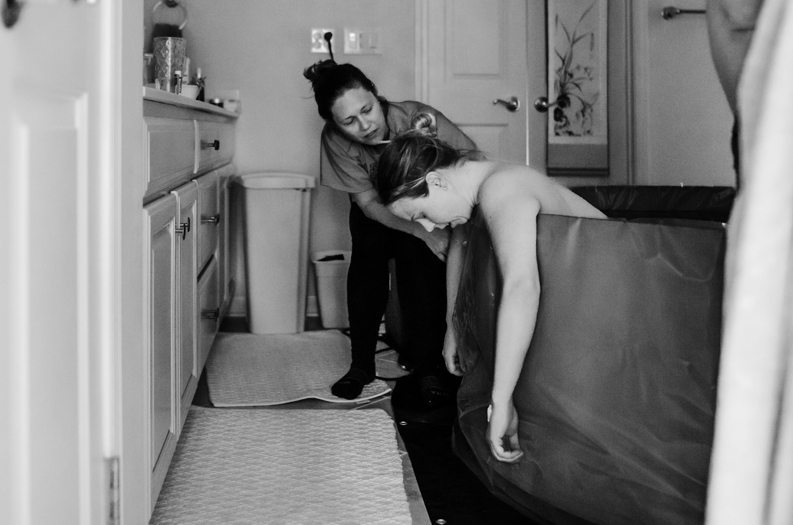

Doulas: getting paid by MassHealth
Since December 8, 2023, MassHealth pays doulas who are enrolled as MassHealth providers. Here's how to get enrolled.

In 2026 the Department of Public Health launched a free, voluntary doula certification. You don't need it to work as a doula, and it's a separate process from enrolling with MassHealth. Being a MassHealth provider is one of the ways to qualify, and it may matter if private insurers start covering doulas (a bill to require that is moving through the Legislature). See the four ways to qualify →
Start here: steps only you can do
These are tied to your identity, so the law requires you to do them yourself. They take about 2–3 hours total.
-
An NPI is your 10-digit health-provider ID. Create your own account and apply for an individual (Type 1) NPI through NPPES. It's free and usually takes a few days.
-
A free online course, about 2 hours. It has to be you who takes it. Download and save the completion certificate. It goes in your application.Walk me through the training →Went to a live MassHealth session instead? See your options
Next steps: the paperwork
Everything below is forms and follow-up. Take it one step at a time. Each step links to the official source.
-
You need one of three things: a certificate from a doula training, a letter from a doula certification organization, or recommendations from past clients and health care providers. Tip: if you go the recommendation route, ask early, since people often take a few weeks to reply.
-
MassHealth doesn't post the application online. Request it with MassHealth's Provider Application Request Form, and they'll email you the package. (If MassHealth instead points you to its online provider portal to download the forms, use that. Either way, always use the newest forms MassHealth gives you.) It's about 10 forms, including the doula application, a provider contract, a W-9 and a direct-deposit form. Have your NPI number, training certificate and proof of training ready.Request the application package →See the full list of forms on the application checklist.
-
MassHealth requires the completed package by mail, to the address printed on the application. Make a copy of every page first, and consider sending it with tracking so you know when it arrives.
-
MassHealth usually processes applications within about 60 days and may contact you with questions. Answer quickly, or your application can be denied. MassHealth only pays for visits on dates when you're already enrolled, so wait for approval before billable visits. To check on it, call MassHealth Customer Service at (800) 841-2900.
-
Many MassHealth members are in a managed care plan (an ACO or MCO), and these plans may have their own sign-up steps. Ask each plan your clients use how to join their network.
Rules can change. This guide summarizes official MassHealth materials as of October 2026. Always confirm with MassHealth before submitting.
Free for a limited time
Rather not do the paperwork alone? We'll do it with you.
We're helping a small group of Massachusetts doulas get enrolled with MassHealth, at no cost.
Request free helpWhat we do
Fill out your MassHealth application package from a short online form, request your recommendation letters, and follow up until you're approved. Then we help you sign up with your clients' health plans.
What you do
Get your NPI number and take the 2-hour MassHealth training using our guide, then review, sign and mail your application. You enter your own Social Security and bank details, so we never hold them.
Why it's free
We're starting small to learn what doulas need most. In return, we'll ask for your honest feedback.
Request free help, or ask a question
Check the box in the form if you'd like us to do your paperwork with you. Otherwise, tell us where you're stuck or what's confusing. We read every message.
Please don't send Social Security numbers, bank details or client information.